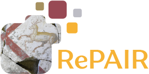

Acknowledgment
This work is part of a project that has received funding from the European Union's Horizon 2020 research and innovation programme under grant agreement No.964854.


This paper proposes the RePAIR dataset that represents a challenging benchmark to test modern computational and data driven methods for puzzle-solving and reassembly tasks. Our dataset has unique properties that are uncommon to current benchmarks for 2D and 3D puzzle solving. The fragments and fractures are realistic, caused by a collapse of a fresco during a World War II bombing at the Pompeii archaeological park. The fragments are also eroded and have missing pieces with irregular shapes and different dimensions, challenging further the reassembly algorithms. The dataset is multi-modal providing hi-res images with characteristic pictorial elements, detailed 3D scans of the fragments and meta-data annotated by the archaeologists. Ground truth has been generated through several years of unceasing fieldwork, including the excavation and cleaning of each fragment, followed by manual puzzle solving by archaeologists of a subset of 1,000 pieces among the 16,000 available. After digitizing all the fragments in 3D, a benchmark was prepared to challenge current reassembly and puzzle-solving methods that often solve more simplistic synthetic scenarios. The tested baselines show that there clearly exists a gap to fill in solving this computationally complex problem.
This work is part of a project that has received funding from the European Union's Horizon 2020 research and innovation programme under grant agreement No.964854.